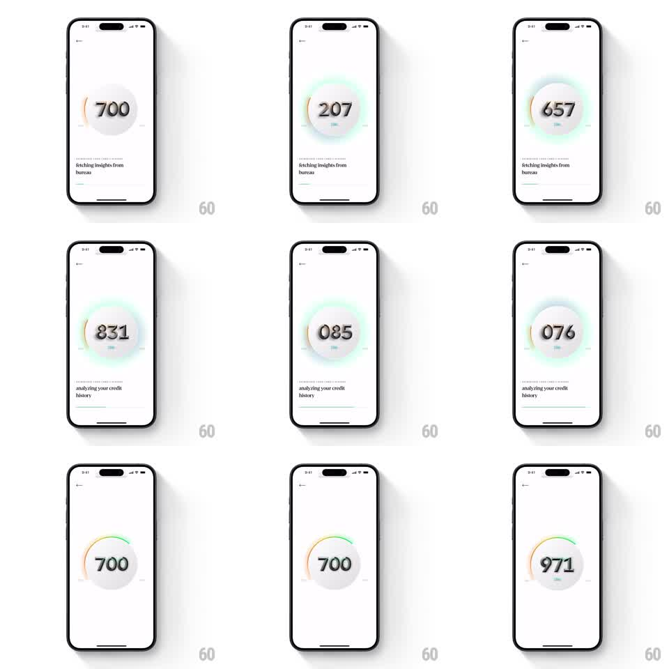

Media
Frame-by-frame

Rebuild this animation 1:1: CRED's credit-score retrieval sequence - on a light screen, a big number inside a circle ticks rapidly through random values (700, 207, 657, 831, 085, 076...) with shifting colored auras, status lines cycling below ("fetching insights from bureau", "analyzing your credit history"), until a gradient progress arc draws around the circle and the number settles on the final score.

Rebuild this animation 1:1: CRED's credit-score retrieval sequence - on a light screen, a big number inside a circle ticks rapidly through random values (700, 207, 657, 831, 085, 076...) with shifting colored auras, status lines cycling below ("fetching insights from bureau", "analyzing your credit history"), until a gradient progress arc draws around the circle and the number settles on the final score.
## Integration
Integration: stack-agnostic spec - springs given as stiffness/damping, timed motions as duration + curve; map every value to your framework and animation library of choice.
## Scene
Light screen, back chevron top-left. Center: a large three-digit number inside a soft circular disc, surrounded by a glowing aura that shifts color (amber, mint, blue). Below: a status line ("fetching insights from bureau", then "analyzing your credit history") with a thin progress underline. End state: a gradient arc (amber -> green) drawn partway around the disc, number settled at the final score.
## Motion spec
Pattern: ticking number loader with aura shifts and arc reveal.
- Phase 1 (~2.5s): the number ticks through random three-digit values (~8 changes per second, digits rolling), the aura cycling hues with each burst of ticks (crossfade 200ms).
- The status line crossfades between phrases (300ms) with its progress underline creeping right.
- Phase 2: the ticking decelerates (eases out over 600ms), digits rolling to the final score with a last-digit settle bounce (translateY 4pt -> 0, spring ~360/16).
- The gradient arc sweeps around the disc to the score's position (800ms ease-out) as the aura locks to the score's band color and blooms once (radius +12pt, 400ms).
## Calibration
- The ticking feels like a slot machine decelerating - fast then confident.
- Aura colors are soft pastels on the light background; the final band color is the most saturated moment.
## Reduced motion
The number crossfades through 3 values then settles; arc fades in (300ms).
## Don't miss
- The number is center-aligned through the tick - no layout shift when digit widths change.
- The status underline never jumps; it only advances.